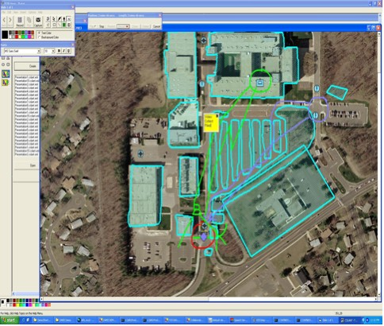
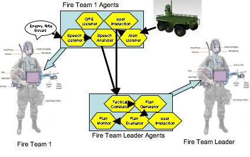

|
|
|
|
|
SDIA (Shared Display with Intelligent Agents)
As the result of 5+ years of Research and Technology Transition, ArtisTech has a unique Tactical Battlefield Collaboration System architecture, Shared Displays with Intelligent Agents (SDIA). The SDIA Architecture uses Intelligent Agents to collect and filter battlefield entities, locations, images, and events, and distribute visual, audio, and tactile representations to soldiers and systems. The SDIA Architecture is developed on leading Enterprise Architecture platforms with strong software engineering practices. We have instances in both Java/J2EE/J2ME, and C#.NET and can interact with Windows, Linux, and J2ME devices.
An SDIA Experimentation Platform
In collaboration with the Army Research Lab (ARL), ArtisTech prepared a platform for the demonstration experimentation with SDIA technologies.
Current army operations often involve large networks of sensors with varying capabilities, ranging from unmanned acoustic sensors to cameras and tripwires to high-powered satellites. These sensors generate more data than can be meaningfully
processed by a human in real time. Intelligent agents can be employed in this domain to monitor incoming sensor data, filter it, analyze it, fuse it, and then alert human operators when conditions of interest arise. These
agents can improve soldier situational awareness by providing timely alerts and indicators when events that may require human intervention arise. In this tactical domain context, agents are utilized in a passive, monitoring and
assistance role.
In the infrastructure domain, agents can play a more active role. In our example, agents are used to create a robust, distributed architecture for a critical network resource in an unreliable network environment. Furthermore,
agents are employed in monitoring the client’s connection to that resource and in diagnosing and repairing fault conditions when they arise. All of these operations can be performed either autonomously or with user interaction.
A basic diagram of this agent architecture is shown below. Sensor listeners and analyzer reside on the Soldier Systems of the Fire Teams, while higher level planning and administrative functions reside on the Commander system.
Many of these agents are instantiated at “connect time” – the first exchange of information between the Fire Team system and the Commander system. In this case, we utilize the ability of the agent system to
instantiate an agent anywhere on the network.
 |
Related Pages
|